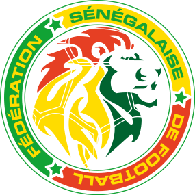

Home
National Teams
Legends
About us
Home
National Teams
Legends
About us

The Senegal national football team ,nicknamed the Lions of Teranga, represents Senegal in international association football and is operated by the Senegalese Football Federation. Senegal advanced to the quarter-finals of the 2002 FIFA World Cup, becoming the second team from Africa (behind Cameroon in 1990). They managed to upset defending world champions France, draw with Denmark and Uruguay, and beat Sweden in extra time in the round of 16, before losing to Turkey in the quarter-finals. Senegal’s first appearance in the Africa Cup of Nations was in 1965, when they, after being group runners-up, lost 1–0 to Ivory Coast for 4th place. They hosted the 1992 African Cup of Nations, where they made it to the quarter-finals. They won their first international trophy at the 2021 Africa Cup of Nations, defeating Egypt in the final.
Mané has registered 29 goals in 89 appearances for Senegal since his debut in 2012, and tied for third in all-time appearances. He represented Senegal at the 2015, 2017, 2019 and 2021 editions of the Africa Cup of Nations. In the 2019 tournament, Mané helped Senegal to a runners-up finish, and a year later, Mané scored the winning kick in the penalty shoot-out to give Senegal their first Africa Cup of Nations title and he was also named the Player of the tournament
Diédhiou scored his first goal for Senegal in a 2–0 2017 Africa Cup of Nations qualification win over Namibia.His second international goal came in a friendly vs Brazil, scoring a penalty after Sadio Mane was fouled in the penalty area. Sadio Mane's dazzling pass set him up for his third goal in the African Cup of Nations encounter against Equatorial Guinea!
As Koulibaly was born in France to Senegalese parents, he was eligible to represent both nations at international level, and initially played for the France national under-20 team. He later made his senior debut with Senegal in 2015, and was a member of the Senegal squad that took part at the 2017 Africa Cup of Nations. He was named to the side that represented Senegal at the 2018 FIFA World Cup the following year, and subsequently helped his team to the final of the 2019 Africa Cup of Nations.
Mendy signed for Premier League side Chelsea for a fee reported of £22 million. In his first season, he immediately broke into the starting line-up, becoming the first African goalkeeper to play for the club's senior team Mendy initially joined Guinea-Bissau in honour of his father, but subsequently switched allegiance to Senegal, where he became the first choice keeper for the 2019 Africa Cup of Nations,He helped his nation win the 2021 Africa Cup of Nations, while also being named the tournament's best goalkeeper
|  | |
|---|---|
| Nickname(s) | Lions of Teranga |
| Association | Senegalese Football Federation |
| Confederation | CAF (Africa) |
| Head coach | Aliou Cissé |
| Captain | Kalidou Koulibaly |
| Top scorer | Henri Camara and Sadio Mané (29) |
| Home stadium | Diamniadio Olympic Stadium |
| Rank | Name | Goals | Appearance | Ratio | Career |
|---|---|---|---|---|---|
| 1 | Sadio Mané | 29 | 89 | 0.33 | 2012–present |
| 1 | Henri Camara | 29 | 99 | 0.29 | 1999–2008 |
| 3 | El Hadji Diouf | 24 | 70 | 0.34 | 2000–2008 |
| 4 | Mamadou Niang | 20 | 54 | 0.37 | 2002–2012 |
| 5 | Jules Bocandé | 20 | 73 | 0.27 | 1979–1993 |
| 6 | Moussa Sow | 18 | 50 | 0.36 | 2009–2018 |
| 7 | Papiss Cissé | 17 | 36 | 0.47 | 2009–2015 |
Aliou Cissé the head coach
of senegal national team
Historically, Senegal was seen as a weaker side in the strong West African region. Although they finished in fourth place in two AFCON editions,Senegalese performance was overall still deemed as poor. Senegal remained under the shadow of West African giants Nigeria, Ivory Coast and Ghana for the majority of the 20th century.
In the 2000s, Senegal began to surge and became a more competitive opponent in the Africa Cup of Nations. Following a successful FIFA World Cup debut in 2002, in which the side reached the quarter-finals, Senegal established itself as a new powerhouse in Africa. The 2002 Africa Cup of Nations tournament marked a defeat to Cameroon 2–3 on penalties after a goalless draw in the final.[30] Senegal once again finished as runners-up in 2019, losing the final 0–1 to Algeria,and finally won their first AFCON title in 2021.